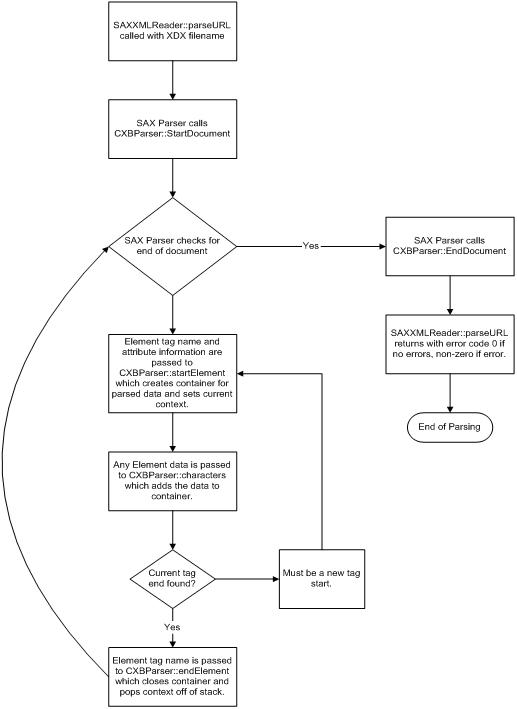

The following diagram shows how an XDX file is parsed:

The MSXML parser is invoked with this call:
hr = pRdr->parseURL( URL );
The function returns the error condition in hr when the parsing is complete. Parsing ends for one of two reasons. Either we reached the end of the file to parse, or there was a call to the fatalError error handler. The result of parseURL is S_OK if parsing was successful. This would include any warnings or recoverable errors. The result of parseURL is the HRESULT returned by fatalError if there was a call to the fatalError error handler during parsing. At this point, XbRC ceases compilation and returns the error code to the command line. Otherwise, when XbRC is complete, it returns S_OK.
The CXBParser class is the workhorse for the compiler. It not only implements the content and error handler functions needed by the MSXML SAX parser, it also stores the list of containers that are created during the compile phase. The class also keeps track of the current context we are in while parsing by storing the current container on a list that acts as a stack. The current context is used to validate the XML and to make sure that the parsed data is parented to the correct containers. The class also implements the functions needed to create the containers. It implements the compile, optimize, and link functions, which iterate through the list of containers and call the appropriate compile, optimize, and link container functions.
The startElement, endElement, and characters content handlers are where most of the parsing work is done. To illustrate how they are called and what happens inside the CXBParser class itself, let's run through a small XDX file and describe the parsing steps.
Given the following XDX file to parse:
<?xml version="1.0"?>
<?xml-stylesheet type="text/xsl" href="xdx.xsl"?>
<XDX version="1.0">
<cubeMap id="reflection00" levels="8">
<cubeFace face="XP" source="Desert_posx.bmp" />
<cubeFace face="XN" source="Desert_negx.bmp" />
<cubeFace face="YP" source="Desert_posy.bmp" />
<cubeFace face="YN" source="Desert_negy.bmp" />
<cubeFace face="ZP" source="Desert_posz.bmp" />
<cubeFace face="ZN" source="Desert_negz.bmp" />
</cubeMap>
<texture id="diffuse04_05" format="D3DFMT_A8" levels="8" alphaSource="Wings_mask.tga"/>
</XDX>
The first call that the CXBParser does work in is the call to CXBParser::startDocument. In this handler, we simply store the path and file name so that our error messages will match the Visual C++ Compiler in format.
The next call that XbRC would get from the MSXML SAX Parser would be the call to CXBParser::startElement with the tag name of <XDX> and the attributes of version = "1.0". CXBParser tracks the current context in a list that acts like a stack so that it can correctly hand off the elements it finds. Since you are just starting, the current context would be NULL because the current context list starts empty. You then call into a switch statement to correctly handle the element passed in based on the context identifier. In the NULL case, this corresponds to XBRC_INVALID_RESOURCE. In this context, ONLY an XDX tag is valid. Since that is what you have, there is no problem. If the <cubeMap> tag had been the first element, this would have generated a fatalError call and parsing (and compilation) would have ended at this point. Each element tag has a function defined for it in CXBParser class. They are generally of the form Begin_tagName. In this case, the function is Begin_XDX, and it takes a pointer to the attributes.
Looking at the Begin_XDX function:
HRESULT CXBParser::Begin_XDX( ISAXAttributes *pAttributes )
{
XBRCXDXData *pXDXData = new XBRCXDXData( pAttributes );
if ( pXDXData == NULL )
{
// Appropriate error handling here.
}
// Check if pXDXData is actually an XDX Context.
// It might not be if version number was wrong.
if( pXDXData->getResourceType() != XBRC_XDX )
{
// Appropriate error handling here.
}
// Push current context into master list and the current context stack.
m_vRawData.push_back(pXDXData);
m_vStack.push_back(pXDXData);
return S_OK;
}
First, you create an instance of the XBRCXDXData class and pass the constructor the pointer to the attributes. XBRCXDXData is an example of a container that holds the data we are parsing from the file. Each container class is derived from the XBRCRawData class. This base class contains a number of pure virtual functions that must be overridden to ensure that the containers work properly. XBRCXDXData has a member m_dwResourceType (inherited from XBRCRawData) of type XBRCResourceType, which describes what kind of resource container this class represents. This m_dwResourceType variable must be one of the following values.
enum XBRCResourceType
{
XBRC_INVALID_RESOURCE = -1,
XBRC_XDX,
XBRC_INCLUDE,
XBRC_TEXTURE,
XBRC_CUBEMAP,
XBRC_VOLUMETEXTURE,
XBRC_PALETTETEXTURE,
XBRC_INDEXBUFFER,
XBRC_VERTEXBUFFER,
XBRC_VERTEXBUFFERDECL,
XBRC_VERTEXBUFFERVREG,
XBRC_VERTEX,
XBRC_VERTEXSHADER,
XBRC_PIXELSHADER,
XBRC_VERTEXSHADERDECL,
XBRC_VERTEXSHADERSTREAM,
XBRC_VERTEXSHADERVREG,
XBRC_VERTEXSHADERASM,
XBRC_VERTEXSHADERCONSTANT,
XBRC_PIXELSHADERASM,
XBRC_PIXELSHADERCONSTANT,
XBRC_FRAME,
XBRC_MODEL,
XBRC_PASS,
XBRC_DRAW,
XBRC_SKELETON,
XBRC_RENDERSTATE,
XBRC_TEXTURESTATE,
XBRC_MATRIX,
XBRC_TRANSLATE,
XBRC_ROTATE,
XBRC_SCALE,
XBRC_ANIMOUTPUT,
XBRC_ANIMATE,
XBRC_VALUES,
XBRC_KEYTIMES,
XBRC_MATRIXMAPPING,
XBRC_MAP,
};
These represent all of the possible, valid tags we can find in an XDX file. Each tag has its own container class derived from XBRCRawData.
Here is the XBRCXDXData class:
class XBRCXDXData : public XBRCRawData
{
protected:
string m_strVersion;
public:
XBRCXDXData()
{
m_dwResourceType = XBRC_XDX;
m_strVersion = "INVALID_VERSION";
}
XBRCXDXData( ISAXAttributes *pAttributes );
virtual ~XBRCXDXData()
{
m_dwResourceType = XBRC_INVALID_RESOURCE;
}
//Adds data to the class from XML file.
virtual HRESULT addData( WCHAR *pwchChars, int cchChars );
// Compiles resource into binary format.
virtual HRESULT compile();
// optimizes binary format. (Stripify triangles, etc.)
virtual HRESULT optimize();
// links resource into final bundled format.
virtual HRESULT link();
// Writes intermediate file containing compiled/optimized binary data.
virtual HRESULT outputIntermediateFile();
// Reads intermediate file containing compiled/optimized binary data.
virtual HRESULT inputIntermediateFile();
// Checks dependencies to see if resource needs to be compiled.
virtual BOOL needsCompiling();
string getVersionString()
{
return m_strVersion;
}
};
Note that the only data it will store is a string corresponding to the version number. This will be passed in as an attribute during construction. There is also a method for getting that version string from the class. During the constructor, you parse out the attributes from the pointer passed in. This code is nearly identical for every container class.
// Parse the attributes for this context.
int iAttributeCount;
pAttributes->getLength( &iAttributeCount );
if( FAILED( result ) )
{
// Appropriate error handling here.
}
for( int iAttribute = 0; iAttribute < iAttributeCount; iAttribute++ )
{
WCHAR *pwchLocalName;
int cchLocalName;
result = pAttributes->getLocalName( iAttribute, &pwchLocalName,
&cchLocalName );
if( FAILED( result ) )
{
// Appropriate error handling here.
}
WCHAR *pwchValue;
int cchValue;
result = pAttributes->getValue( iAttribute, &pwchValue, &cchValue );
if( FAILED( result ) )
{
// Appropriate error handling here.
}
if ( Match( g_strXBRC_Version,pwchLocalName, cchLocalName ) )
{
m_strVersion = CXBParser::CharString( pwchValue, cchValue );
}
else
{
// Do we need to fail if we find an attribute we don't recognize?
// Or can we just continue after informing the user?
g_pXBParser->UnexpectedToken( pwchLocalName, cchLocalName, E_FAIL );
g_pXBParser->m_bErrorSuppress = false;
}
}
You simply loop through all of the attributes and make sure that the attribute you found is valid for this tag. If it is not valid, call UnexpectedToken with the attribute data found. This generates a fatalError call, which stops parsing and compiling at this point. It would be trivially easy to change this to an ignorableWarning call instead, which is what the comment is alluding to.
After parse the attributes, you check the version number found for validity. If it is a valid version number, set the resource type to XBRC_XDX and return. Since the constructor cannot return a value other then the pointer, you use the resource type to indicate to CXBParser that everything was OK or that an error occurred. Looking back at the code in Begin_XDX, note that the next line after the constructor is checking that you didn't get NULL back and that you did, in fact, create an XBRC_XDX resource type container. If the version was wrong, the resource type would have been set to XBRC_INVALID_RESOURCE and you would call fatalError. After insuring that you created the correct kind of container, add the container to the m_vRawData vector and the m_vStack vector, both stored in CXBParser.
The m_vRawData vector is the master list of all parsed data found. Every tag you find will be on this list either directly or inside of a container on this list. For example, the tags associated with the <cubeMap> tag in the example you are parsing will be on a list in the XBRCCubeMapData container instead of on the main list by themselves. You'll see why in a moment.
The m_vStack vector is a stack that holds the current context you are parsing so that calls to startElement, endElement, and characters will know what context they are in. As you call endElement for each tag, you pop that context off of the stack. Thus, the call to endElement for </XDX> will first check that you are in the XDX context. If not, a tag probably didn't have an end tag associated with it in the XML file. The result is a fatal error. If you are in the XDX context, you call a function that is generally of the form End_tag. In this case, it would be End_XDX. The End_XDX function pops the XDX context off of the stack and makes sure that it was an XDX context. This is typically what all of the End_tag functions do.
But we are getting ahead of ourselves! Going back to file parsing already in progress, the next thing that happens is a call to CXBParser::startElement with the <cubeMap> tag. The startElement function now finds that the context is XBRC_XDX. It also discovers that a <cubeMap> tag is valid in this context. It then calls Begin_CubeTexture with the pointer to the attributes passed in. Begin_CubeTexture calls the constructor for XBRCCubeMapData with the attributes, handles any errors that occur, and pushes this container onto the stack to let us know we are now in this context. It also adds this container class to the m_vRawData list. Looking at the XBRCCubeMapData class:
class XBRCCubeMapData : public XBRCRawData
{
protected:
string m_strIdentifier;
string m_strFilter;
string m_strFormat;
DWORD m_dwSize;
DWORD m_dwLevels;
string m_strMapData;
DWORD m_dwNormalMap;
DWORD m_dwSizeSpecified;
CCubemapCompiler *m_pCubeMap;
public:
XBRCCubeMapData()
{
m_dwResourceType = XBRC_CUBEMAP;
}
XBRCCubeMapData( ISAXAttributes *pAttributes );
virtual ~XBRCCubeMapData();
virtual HRESULT addData( WCHAR *pwchChars, int cchChars );
virtual HRESULT compile();
virtual HRESULT optimize();
virtual HRESULT link();
virtual HRESULT outputIntermediateFile();
virtual HRESULT inputIntermediateFile();
virtual BOOL needsCompiling();
virtual string *getResourceIdentifier()
{
return &( m_strIdentifier );
}
vector<XBRCRawData *> m_vCubeData;
};
You will find that there is quite a bit of data stored in this container. The attributes passed in from the XDX file are <cubeMap id="reflection00" levels="8">, which doesn't cover all of the above data items you might expect. Again, the constructor makes the decisions about whether a given attribute must exist or whether it can be filled in with a default value at compile time. The only required attribute in this case is the id, which is needed to identify this resource at compile and link time. All of the other values are set to defaults or are based on the textures used to construct the cube map. These defaults are covered in-depth for cube maps in the XDX to XBR Resource Conversion white paper.
Two other pieces of data do not come from the attributes. The first is the CCubeMapCompiler class pointer. This is a pointer to the class that will construct the cubeMap Direct3D Xbox data, and then save it out. In this case, it is derived (copied almost intact, but for bug fixes!) from the old Bundler code that created cube maps from a list of textures supplied in an RDF file. Bundler is used extensively in the Xbox sample code to construct the data needed for the samples. The end user can replace this class with whatever output format would be desired for this container. For example, this class could be replaced by a class to output the DirectX 9 format CubeMap instead of the Xbox format or a custom format for a specific game engine. How this replacement occurs is up to the developer. You could include all of the output formats desired and only output the desired format based on a compiler command-line switch. You could also use #if constructions in the code and build different versions of XbRC for different platforms or game engines.
The other piece of data is a vector containing the individual cube map faces. This will be filled out with the individual faces as they are parsed out of the file. Let's look at that next.
You are now in an XBRC_CUBEMAP context, and the next call to CXBParser::startElement will be with the tag <cubeFace>. This tag is valid only inside an XBRC_CUBEMAP context. This generates a call to Begin_LocalTexture. Generally, functions of the form Begin_Localtag do not add to the main list. Instead, they add to a local list, like the vector contained in XBRCCubeMapData. Here is the function Begin_LocalTexture:
HRESULT CXBParser::Begin_LocalTexture( ISAXAttributes *pAttributes,
XBRCRawData *pLocalData )
{
XBRCTextureData *pTextureData = new XBRCTextureData( pAttributes );
if ( pTextureData == NULL )
{
// Appropriate error handling here.
}
// Check if pTextureData is actually a Texture Context.
// It might not be if source files were not found.
if( pTextureData->getResourceType() != XBRC_TEXTURE )
{
// Appropriate error handling here.
}
// Push onto Local List passed in.
if( pLocalData->getResourceType() == XBRC_CUBEMAP )
{
((XBRCCubeMapData *)pLocalData)->m_vCubeData.push_back( pTextureData );
}
else if( pLocalData->getResourceType() == XBRC_VOLUMETEXTURE )
{
((XBRCVolumeTextureData *)pLocalData)->m_vVolumeData.
push_back( pTextureData );
}
else if( pLocalData->getResourceType() == XBRC_TEXTURE )
{
((XBRCTextureData *)pLocalData)->m_vTextureData.push_back( pTextureData );
}
else
{
// Appropriate error handling here.
}
return S_OK;
}
The first part of the function should be familiar by now. It takes the attributes and creates an XBRCTextureData from them. The difference is that you are not going to add this container to the main list. Instead, you add it to the list inside the container you passed in. Note that you also generate an error if the context passed in was wrong. During the compile phase, simply traverse this list and build up your cube map out of the textures supplied in this local list of texture containers.
Looking back at the XDX file, you'll see that this tag has the end element marker inside the tag itself <cubeFace face="XP" source="Desert_posx.bmp" />. This means that the next call to CXBParser will be the endElement handler. You are still in an XBRC_CUBEMAP context, and endElement is passed the tag name "cubeFace" as the element you are ending. Fortunately, this is valid for this context and you call End_LocalTexture. Because you have nothing to pop (because the cubeFace container was added to a local list inside of the cubeMap container) this function simply returns S_OK.
You then repeat the above steps for each <cubeFace> tag you find. You then hit the </cubeMap> tag, which calls endElement with this tag. This generates a call to End_CubeTexture. Here is that function:
HRESULT CXBParser::End_CubeTexture()
{
// Make sure the current context matches this one!
XBRCRawData *pCubeMapData = NULL;
LONG topOfStack = m_vStack.size() - 1;
if( topOfStack != -1 )
pCubeMapData = m_vStack[topOfStack];
if ( pCubeMapData && ( pCubeMapData->getResourceType() != XBRC_CUBEMAP ) )
{
// Appropriate error handling here.
}
// Pop the last element off of the stack.
m_vStack.erase( &m_vStack[topOfStack], &m_vStack[topOfStack+1] );
return S_OK;
}
You grab the top of the stack and make sure it is an XBRC_CUBEMAP context. If not, trigger a fatalError call and stop parsing. Otherwise, simply pop it off of the context stack.
The next call is to CXBParser::startElement with the tag <texture>. This works much as already described. You call Begin_Texture (not Begin_LocalTexture, because you are back in an XDX context, and you want to add this texture to the main list) and create an XBRCTextureData container with the data in the attributes. You then add that container to both the main list and the stack. This container also has a compiler that can be changed out to write whatever format is desired for a texture. When you hit the end of the line in the XML file, call CXBParser::endElement because the end of the tag is at the end of the line. This pops the XBRC_TEXTURE context, and you are back to the XBRC_XDX context.
You then hit the </XDX> tag and pop the XBRC_XDX context, which leaves the stack empty. Then, hit the end of the file, and the CXBParser::endDocument handler is called, which makes sure that the stack is empty.
The parser then returns S_OK and we are now free to compile the data in our containers.